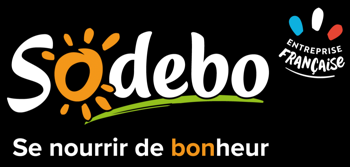

SAE Option IA : Modélisation stochastique
SAE Option IA : Modélisation stochastique(juil. 2024)
Datathon SNCF Gares et Connexions(janv. 2024)

Réécriture de programme SAS et automatisation en R
SAE Option IA : Modélisation stochastique
Datathon SNCF Gares et Connexions